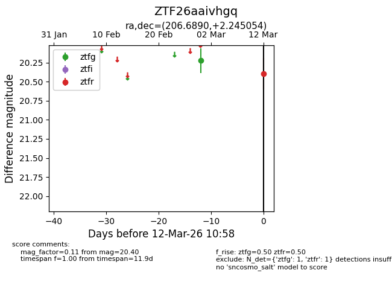
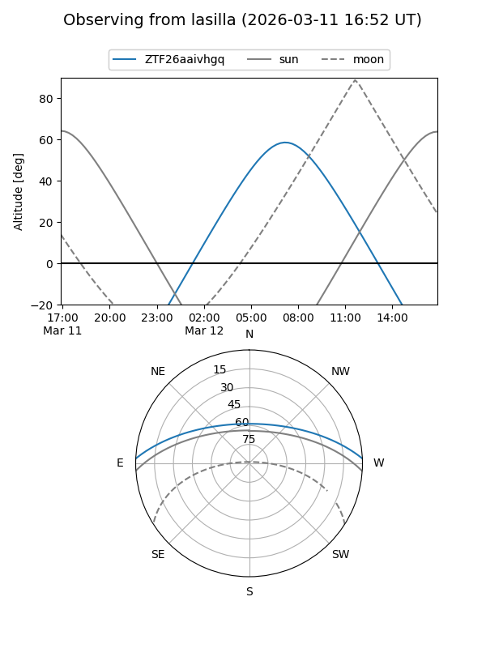
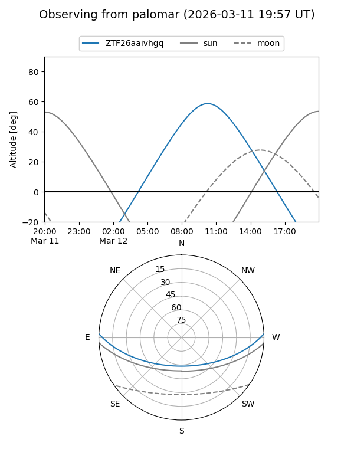

ZTF26aaivhgq
Target ZTF26aaivhgq at 2026-03-12 11:00
Aliases and brokers:
FINK: link
Lasair: link
ALeRCE: link
alt names
ZTF26aaivhgq (ztf,fink_ztf)
Coordinates:
equatorial (ra, dec) = 206.6890,+2.24505
equatorial (HMS+DMS) = 13:46:45.37,+02:14:42.19
galactic (l, b) = (333.3043,+61.81019)
Flags:
Photometry:
last ztfg=20.22, ztfr=20.40
1 ztfg, 1 ztfr detections
Lightcurve

Visibility


Additional plots